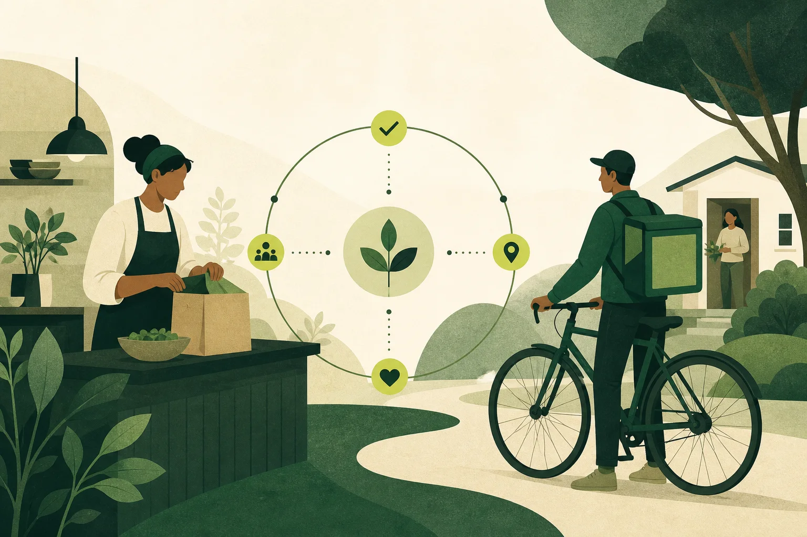

Open coordination for real-world work
People should own the rules behind their work.
Flora Fauna gives Givers and Movers control over their terms, economics, and consent—while every agreement stays visible to the Customer.
No hidden algorithms
No delivery commission
Consent by design
Agreement trace
FF–02418
Food delivery · Local
Terms are visible before anyone agrees.
Judge check complete
Fee, distance, timing, and both parties’ rules are compatible.
4.2 km
32 min estimate
Decision trail saved
01 / Mission
Democratize work and the Customer relationship.
Give the requester and the service provider equal control over their own terms, clear visibility into the economics, and final consent over every transaction.

The Giver proposes. The Mover chooses. The Judge keeps the process fair and explainable.
02 / The model
Three roles.
Clear boundaries.
The platform coordinates the relationship. It does not quietly take ownership of it.
01
Giver
Creates the job, defines its scope, and sets the predetermined fee and conditions.
Owns the offer
02
Mover
Sees the complete offer and retains the final right to accept or reject it.
Owns the consent
03
Judge
Checks feasibility and process fairness, then explains how the agreement was reached.
Protects the process03 / Personal agents
A representative for each side. Not one hidden algorithm.
Every agent works within its participant’s approved rules. Nothing changes without the consent required from the people involved.
Giver Agent
Applies the Giver’s approved goals, limits, priorities, and proposed terms.
Mover Agent
Evaluates fee, distance, timing, risk, and work preferences set by the Mover.
Judge Agent
Reviews both sides neutrally, explains tradeoffs, and records the decision trail.
04 / In practice
Food delivery without hidden economics.
One order. Four visible steps. A complete trail the Customer can understand.
Offer
A restaurant posts a delivery request and sets the delivery fee.
Visibility
A delivery partner sees the full fee, route, timing, and conditions.
Evaluation
Both agents evaluate the job using visible, user-approved rules.
Agreement
The Judge validates the process and records how the decision was reached.
Built for an autonomous world
Technology can coordinate the work.
People should still own the relationship.
Flat subscriptions. A minuscule customer platform fee. No percentage cut from every job.
Return to the beginning